【完整指南】輕鬆了解水雷射微創植牙
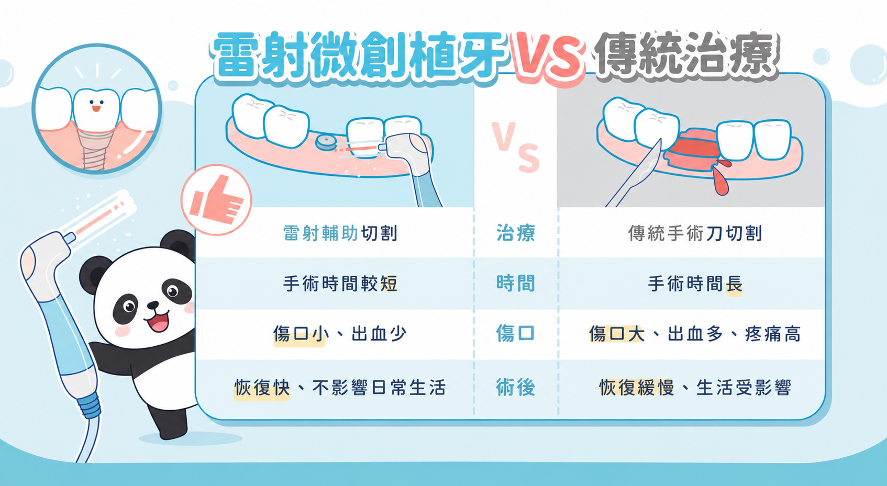
1.為何微創植牙收費比較高？
植牙費用為植體植入（人工牙根）+支台齒若有+牙冠，總費用為8-14萬/顆 (水雷射微創術式、補骨(若有)、鼻竇增高(若有)、導航儀等費用另計)，採「透明分段計費」(做到哪付到哪)，讓您清晰掌控醫療預算：
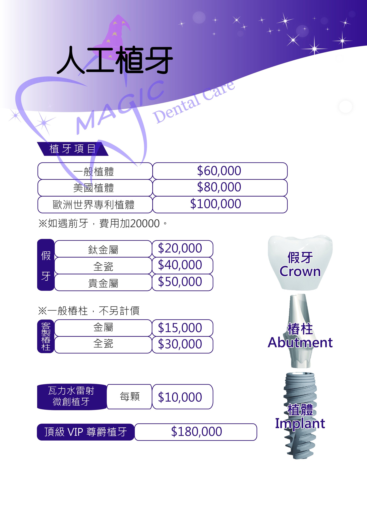
1. 第一階段：植體植入（人工牙根）
• 台灣植體： 6萬元 / 顆
• 歐洲植體： 原價10萬 元 ➔ 因潘院長為歐洲植體講師，廠商有補助患者3萬元
• 美國植體： 8萬元 / 顆
• 全程水雷射術式：每顆 1萬 元
2. 第二階段：支台齒與正式牙冠（約 3 個月至半年後）
• 全瓷牙冠 + 支台齒： 4萬 元 / 顆 (自然美觀、生物相容性高)
• 金屬牙冠 + 支台齒： 2萬 元 / 顆
• 前牙客製化加購： 前牙美觀區若選用客製化轉角度白色氧化鋯，須另加 2萬 元 / 顆
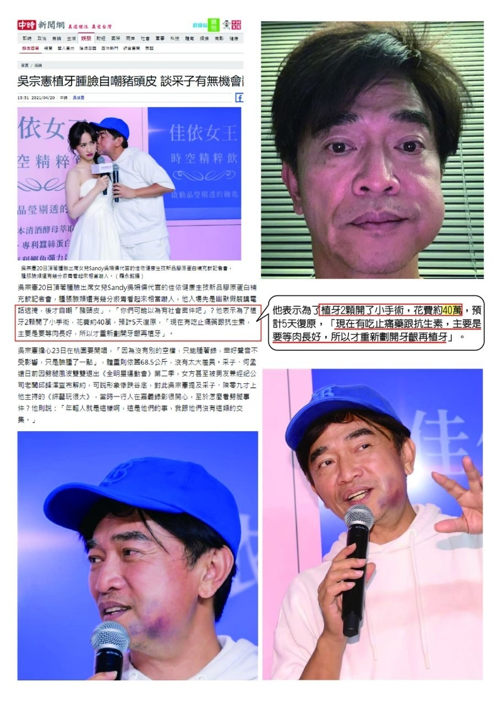
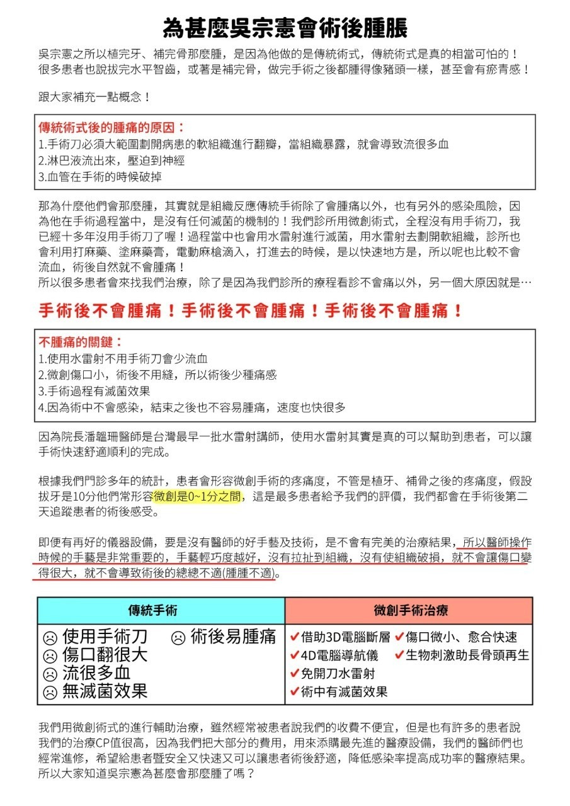
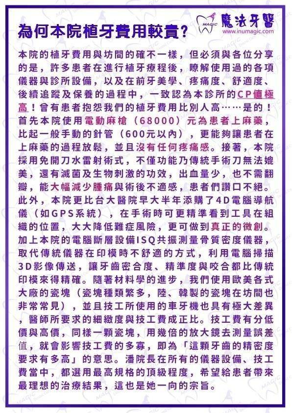
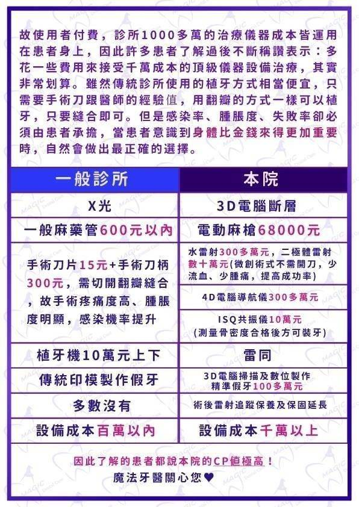
植牙手術結束後會再拍電腦斷層以確認植體位置、以及會讓患者照射低能量雷射(Low Level Laser Treatment)促進骨整合，讓軟組織及硬組織都修復得更快
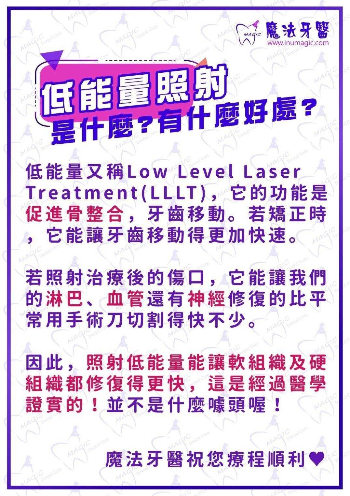
為何本診所的微創植牙收費比較高？
| 一般診所 | 本診所 |
|---|---|
| X光 | 3D電腦斷層 |
| 一般麻藥管600元以內 | 電動麻槍68000元 |
| 手術刀片15元+手術刀柄300元,需切開翻瓣縫合,故手術疼痛度高、腫脹度明顯,感染機率提升 | 數百萬元(微創術式不需開刀,少流血、少腫痛,提高成功率)4D電腦導航儀300多萬元 |
| 植牙機10萬元上下 | 雷同 |
| 傳統印模製作假牙 | 3D電腦掃描及數位製作精準假牙100多萬元 |
| 多數沒有 | 術後雷射追蹤保養及保固延長 |
| 設備成本百萬以內 | 設備成本千萬以上 |
2.植牙三大階段流程說明
階段一：術前準備與評估
植牙前的溝通與精準檢查，是成功最重要的基礎。
1.補骨：如果缺牙時間太久、牙周病導致骨頭吸收，或是齒槽骨天生較薄，就必須透過「補骨（齒槽骨重建）」來鋪平與打穩地基！
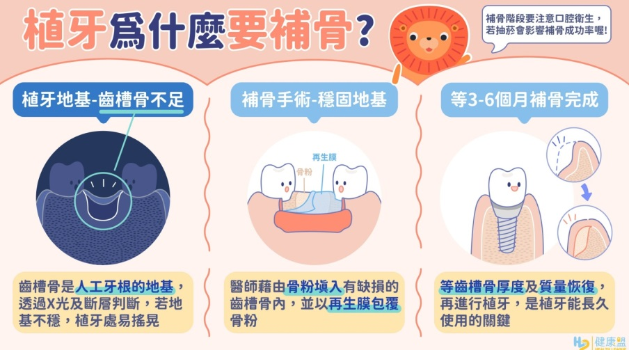
精準評估與補骨： 透過 3D CBCT 電腦斷層量測缺骨範圍，填入骨粉並覆蓋再生膜。
• 等待骨生成： 補骨後需等待約 3 個月，讓新骨頭順利生長穩固。
（視情況）上顎鼻竇增高術： 若植牙位置在上顎後牙區且骨頭高度不夠，會視情況同時進行「鼻竇抬高術」，向上爭取足夠的植牙深度。
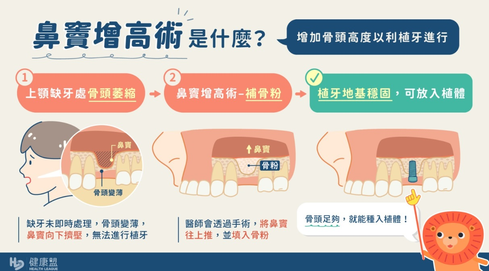
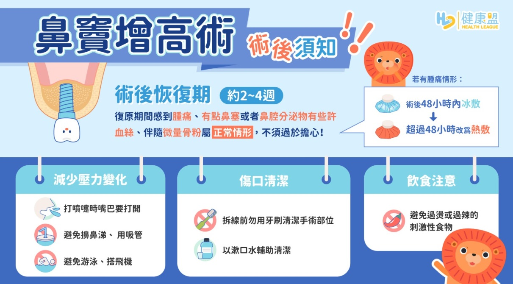
2.3D 斷層精準掃描：拍攝全口 3D 電腦斷層（CT），精確評估齒槽骨高度、寬度與神經位置。
3.用藥與健康評估：
告之是否服用慢性病藥物（如抗凝血劑、骨質疏鬆藥物）。
手術前 2 天避免食用活血食物（如人蔘、銀杏、高劑量維生素 E）。
飲食建議： 手術當天可先吃飽再過來，放鬆心情、睡眠充足即可。


階段二：植牙手術當天
若您的缺牙區骨質較薄或不足，潘院長會先為您進行齒槽骨重建（補骨）。待地基穩固後，再結合微創水雷射與4D 電腦導航儀進行精準植牙，過程快速、舒適且幾乎不腫痛。
1. 術前報到 3 步驟
確認已看完 衛教影片 : 六部曲
確認並簽屬手術前相關同意書與治療計畫。
依醫囑服用預防性藥物，讓身體維持最佳防護狀態。
2. 正式手術過程（單顆約 30～60 分鐘）
全程局部麻醉： 過程完全無痛感，放鬆心情即可。
4D 電腦導航儀精準定位： 如同口腔 GPS，精確避開神經與血管，將植體鎖入最佳位置。
水雷射輔助滅菌： 邊切削邊滅菌，具生物刺激功效，傷口小、流血少，降低發炎與感染率（特定條件下植入過程甚至不到 5 分鐘）。
麻藥退去後才可正常享用下一餐喔！
階段三：安裝支台齒與正式牙冠
當骨質密度測量達標後，即可進入最後的假牙製作與裝戴階段：
Step 1. 安裝支台齒（分兩種情況）
【情況 A：原廠支台齒】 評估符合規格者，當天即可直接安裝。
【情況 B：技工所客製化支台齒】 若前牙美觀區或咬合角度較特殊，需經由口掃/印模送交技工所客製化製作，需等待約 7 天。
Step 2. 安裝支台齒（分兩種情況）
正式牙冠密合： 裝上專屬的全瓷冠或金屬牙冠，精細微調咬合與鄰牙接觸面。
重獲健全咬合： 順利完成療程，恢復自然美觀與強健的咀嚼功能！
3.植牙術後注意事項

手術後清潔照護步驟
1.回去更換新的牙刷及牙膏(其他牙齒牙齦肉肉的地方還是要正常刷牙喔)
2.傷口前5-7天用手指頭擠潔牙泡泡清潔
3.第二周更換手術超軟毛牙刷一樣擠潔牙泡泡清潔傷口
4.第三周可正常使用一般軟毛刷牙
影片中提到的漱口水，因政府要求不能使用分裝瓶，故現在提供沒有小瓶漱口水，可以自行做購買唷
關鍵營養補充（加速傷口修復）
為了讓大窟窿或較大的傷口快速癒合、促進細胞生長，潘院長特別提醒您回去後補充以下營養：
• 黃豆胚軸： 含有豐富的活性營養成分，能提供細胞修復所需的關鍵營養，促進組織生長。
• 高純度魚油：
o 抗發炎： 降低術後發炎反應，舒緩腫痛。
o 促進循環： 幫助通血管，帶來充足養分與氧氣。
o 豐富 DHA： 促進新細胞生長，讓傷口窟窿長得更快更漂亮、大大降低感染率！
提醒您： 之前在診所購買的保健食品（黃豆胚軸、魚油等）一定要記得按時補充！多一分營養，傷口就多一分修復力。

魔法牙醫的高階醫療設備
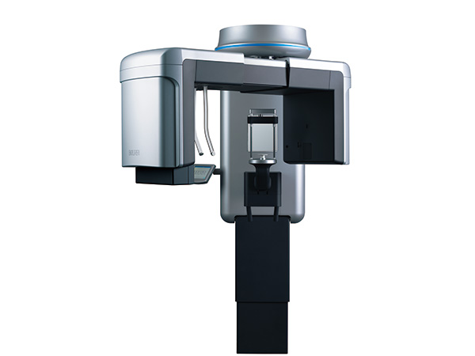
3D數位電腦斷層掃描
劑量比傳統電腦斷層低許多，大幅降低輻射風險。能立體呈現口腔骨骼與牙齒結構，醫師可更精準評估植牙與治療計畫。患者安心照、醫師診斷更準確。
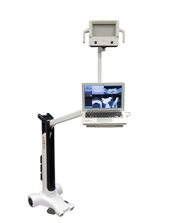
4D數位導航系統
就像 GPS 導航一樣，能即時掌握植體與骨頭、神經血管的位置。大幅提升手術精準度與安全性，讓植牙過程更可控、更安心。是現代植牙不可或缺的高科技輔助工具。
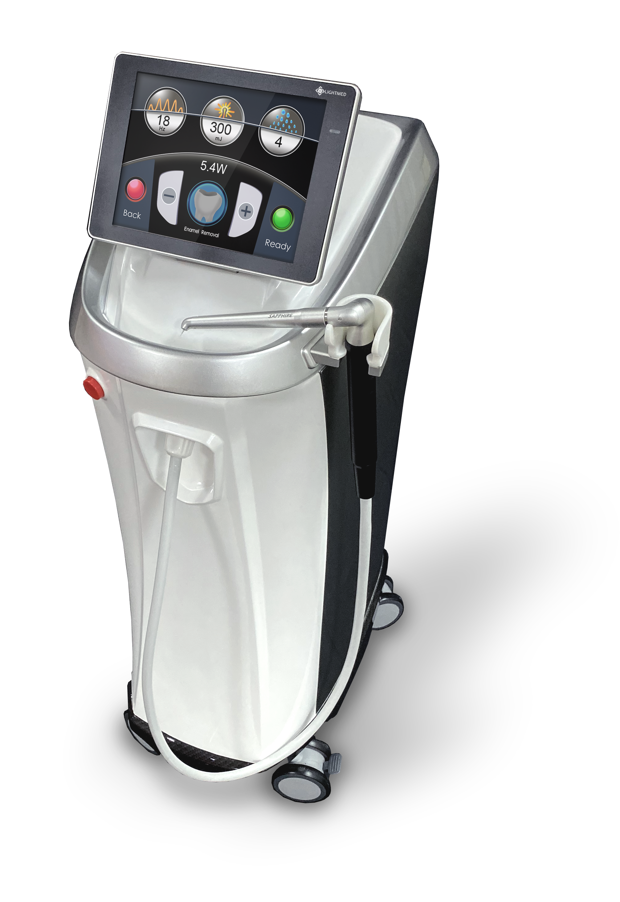
新式水雷射
以雷射取代傳統手術刀，做到切割、滅菌、止血一次完成。治療過程微創、舒適，傷口小、復原快。特別適合牙周病治療與植牙，帶來全新溫和的醫療體驗。